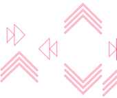

Tesco Bank embarked on developing new systems and processes to support the separation and transfer of its Savings & Loans and Credit Cards businesses from RBS hosted platforms to Tesco Bank owned platforms. In addition to the sale and servicing of new savings & loans business, the new systems and processes would support the servicing of existing customers and accounts.
Control of all banking business processes that were supported by RBS was transferred to Tesco Bank. This applied equally to processes involving external vendor support. The cutover of all savings & loans and credit card business processes from RBS to Tesco Bank took place over a single weekend and was scheduled as a series of big bang migration events in the Banking Migration Transition period.
Control of all banking business processes that were supported by RBS was transferred to Tesco Bank. This applied equally to processes involving external vendor support. The cutover of all savings & loans and credit card business processes from RBS to Tesco Bank took place over a single weekend and was scheduled as a series of big bang migration events in the Banking Migration Transition period.
Tesco Bank migration of customer data and third party technology partners from the RBS hosted solution to the target Tesco Bank owned platforms included in excess of 30 major applications and supporting data feeds and integration points. This included core banking, CRM, Customer, data warehouse, Payments, Regulatory, Servicing, Risk & Fraud, Cards, Complaints, Statements, Scanning & Document Management and Illustration. In addition, the mapping of source data and business processes to the new target was a non-trivial exercise and several dress rehearsals were performed of the historical and trailing data sets to ensure that the ETL performance could be completed error free over a migration weekend.